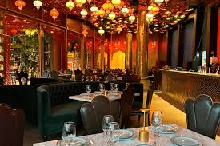
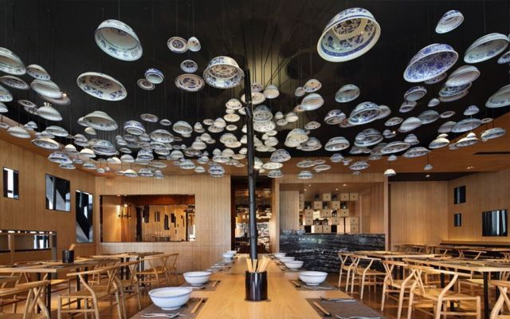
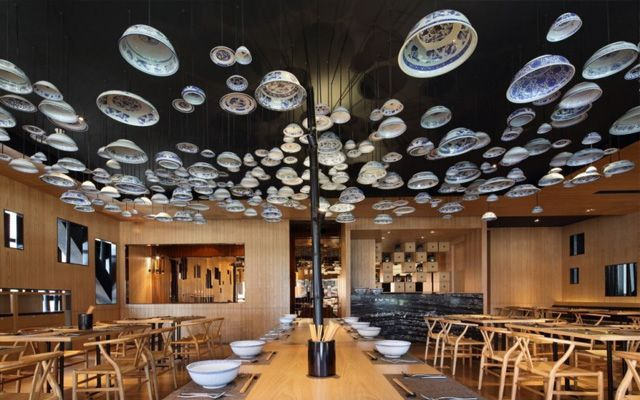
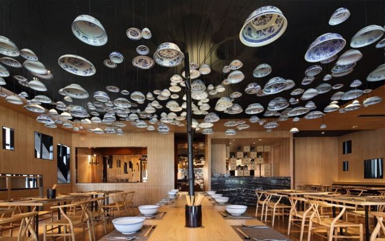
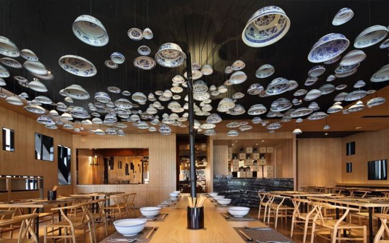

Conoce nuestro espacio

 


Más que comida, una tradición familiar
Todo comenzó en 2010, en una pequeña cocina familiar con un sueño simple: compartir recetas tradicionales con un toque moderno y artesanal.
A lo largo de los años, **Sabor Local** ha crecido gracias a la preferencia de nuestros vecinos, pero mantenemos la misma esencia del primer día: ingredientes frescos, procesos lentos y mucho amor en cada plato.
Brindar una experiencia gastronómica única, utilizando productos locales y técnicas artesanales para deleitar el paladar de nuestra comunidad.
